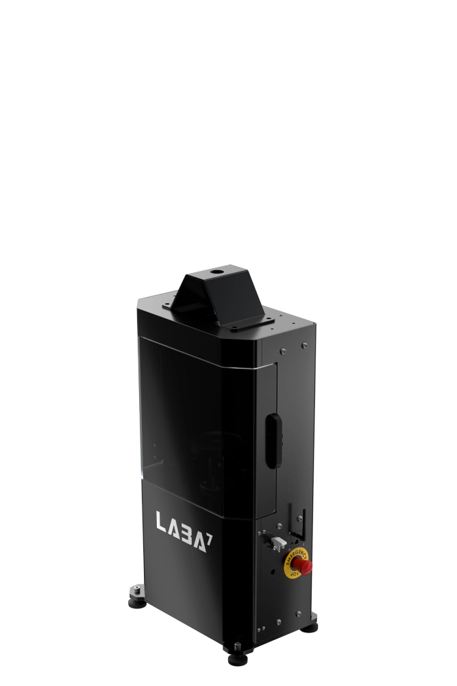
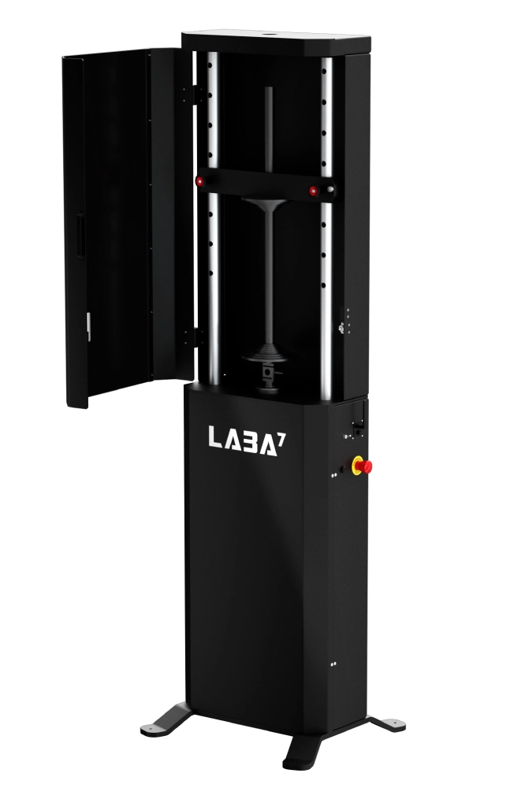

Automatic Spring Tester for Any Spring
Our fully automatic spring rate tester measures fork and shock absorber spring rates with precision. Monitor test results instantly with wireless data transmission and real-time performance analytics.



| Automatic tests | Yes | |||
| Preload | Manual or Automatic (force-based) | |||
| Dimensions WxDxH | Sine, Triangle, Square, Pulse, Pink noise, Sweep, Chirp, and Direct track data import. | |||
| Adjustable crossbar | 0.1 mm/s (0.04 in/s) | |||
| Maximum allowed force | 150 Hz | |||
| Motor | 100 G | |||
| Reinforced components |
Digital position sampling 20 kHz. Synchronized analog load cell sampling 20 kHz, 20-bit resolution. |
|||
| EOL testing focused | 8 synchronized channels. Up to 10 kHz sampling rate. | |||
| Free rear spring length | 50 nanometers | |||
| Free front spring length | 250 mm (9.85 in) | |||
| Spring length | 3-phase 380/400 VAC 16 A. Can be optimized for 1-phase 220/240 VAC or other configurations. Contact us to learn more. | |||
| Required power | Compressed air | |||
| Dimensions WxDxH | Sine, Triangle, Square, Pulse, Pink noise, Sweep, Chirp, and Direct track data import. | |||
| Weight | Compressed air | |||
| Software | LABA7 Spring dyno software, no extra cost. 1-on-1 personalized online onboarding and training. | |||
| Technical support | Typical resolution time is less than 24 hours. Spare parts are in stock for quick dispatch. | |||